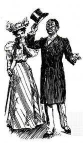

"Gated Intellectuals and Ignorance in Political Life: Toward a Borderless Pedagogy in the Occupy Movement" by Henry Giroux, Truthout, 3-20-12.
| Engl 6800 | Advanced Methods of Teaching Literature | Sp 2012 |
#Occupy Literature!
The core of rebellion, as you have seen by this and read of other rebellions, are the universities; which nevertheless are not to be cast away but to be better disciplined, that is to say, that the politics there taught be made to be, as true politics should be, such as are fit to make men know that it is their duty to obey all laws whatsoever that shall by the authority of the king be enacted.
Thomas Hobbes, Behemoth, 1668
I ask the pardon of those teachers who, in dreadful conditions, attempt to turn the few weapons they can find in the history and learning they ‘teach’ against the ideology, the system and the practices in which they are trapped. They are a kind of hero. But they are rare and how many (the majority) do not even begin to suspect the ‘work’ the system (which is bigger than they are and crushes them) forces them to do, or worse, put all their heart and ingenuity into performing it with the most advanced awareness (the famous new methods!).
Louis Althusser, Ideology and Ideological State Apparatuses, 1970
Dramatically increasing economic inequality in a rapidly globalizing world, major capitalist crisis, massive financial fraud, high unemployment, longterm warfare, environmental devastation, increasing corporate political influence, attacks on public employees and unions and elimination of public sector resources, escalting college costs and student debt -- all of this and more has led to one of the most significant global protest movements of recent history.
K-12 and university education is also caught up in the complex dynamics that inspire Occupy Wall Street. A struggle over educational purposes and resources is manifest in demands for curriculum control, imposition of state and national standards, standardized testing, uniform assessment, accountability, and accreditation. While the message to the 99% may be "let them eat tests," there are simultaneously powerful avenues of resistance including critical pedagogy, multicultural and perspectival teaching, expanding canons, new conceptions of text, and potentially empowering new technologies.
Thus, in the spirit of the ongoing Occupy Wall Street Movement, this section of English 6800 seeks to help literature teachers "understand the history of their present circumstances" and "what it means to teach, to study, and to become 'educated' [in literature] in the present moment" so that they can "individually reinvigorate the academic curriculum" (Pinar, 2012). Teachers are invited to help make their classes and schools "center[s] of critique and a vital democratic public sphere that cultivates the knowledge, skills, and values necessary for the production of a democratic polity..." (Giroux, 12/19/11) |
From the beginning of the course students will focus on a literature course that they currently teach, or would like to teach, and this seminar's course work and the final project will be carefully and systematically developed around that class, putting into practice the critical and transformational approaches we will be studying.
The ambition of this course will be for teachers to able to "Occupy Literature" -- to develop meaningful and relevant cultural studies, critical pedagogy literature curriculum related in some way to one or more of the myrid topics, issues and themes animating the Occupy Movement. By drawing on Occupy Wall Street, the seminar hopes to illustrate the pedagogical value of teaching literature as a history of the present, and a utopian aspiration for the future.
Addressing secondary and university levels, this seminar aims to foster teacher intellectuals and professional leaders in the teaching of literature. To do so in the light of Occupy Wall Street entails attending to issues of inequality, racism, and nationalism in the historical development of our discipline and the institutionalization of literature instruction, questions of textual and interpretive authority, canon formation, and the standardization and corporatization of education. It also calls for exploring the democratizing possibilities of cultural studies, multicultural materials and perspectives, literary theory, textual intervention and alternative knowledges, emerging Internet tools and resources, and alternative pedagogies and democratic decision making.
Editors at the journal Rethinking Schools have encouraged our class to craft an article addressing English teaching and the Occupy Movement. And, our syllabus is, in some measure, designed around the possibility of such an article -- which I believe we could substantially and collectively write via participation in our on-line Nicenet computer conference. (Our Nicenet class name is "6800 2012" and the class key is "2327450624.")
Our course will be taught in the WMU English Education wireless laptop classroom suite and will experiment with a variety of free resources and open-source teacher-driven technologies (rather than coporate course management tools) including remote hosted websites, collaborative writing forums, wikis, threaded discussion, social networking, blogs, etc.
Of course books, too, are technology, caught up in systems of production and market distribution...
Students are expected to join the National Council of the Teachers of English, Michigan Council of the Teachers of English, Association of Writers and Writing Programs, and/or the Modern Language Association and write a proposal to present at a professional conference, such as the NCTE Conference (Las Vegas, Nov. 15-18) or the AWP Conference.
Since the seminar is discussion-based, attendance and preparation are essential. Missing any classes will affect your learning. Missing classes may affect your final grade and missing three or more classes may lead to failing the course. See my philosophy regarding preparation, attendance, and participation.
This class will follow WMU academic honesty policies. If at any point in the semester if you feel stress, English 6800 offers free on-line therapy from Eliza!

Required Reading:
Appleman, Deborah. Critical Encounters in High School English: Teaching Literary Theory to Adolescents Second Edition. (Teachers College Press, 2009)
Foucault, Michel. Discipline and Punish: The Birth of the Prison (Vintage, 1979)
Rosenblatt, Louise. Literature as Exploration. Fourth Edition. (MLA, 1983).
Rozema, Robert and Allen Webb. Literature and the Web: Reading and Responding with New Technologies (Heinemann, 2008).
Webb, Allen. Teaching the Literature of Today's Middle East. (Routledge, 2012).
Packets including theoretical, historical, and pedagogical essays. ($10 Copy Card required)
Extensive study of websites and on-line resources.
Selections from:
Althusser, Louis. Ideology and Ideological State Apparatuses.
Applebee, Arthur. Tradition and Reform in the Teaching of English.
Beach, Richard, Amanda Thein, and Allen Webb. Exceeding the 6-12 English Language Arts Common Core State Standards: A Literacy Practices Approach.
Boles, Herbert and Samuel Gintis. Schooling in Capitalist America.
Bomer, Randy. "Teaching Toward Great Conversations."
Brass, Jory. "Rereading English's Past and Present through English Journal, 1912 and 2012."
Common Core Standards for Language Arts.
Christenbury, Leila. Making the Journey: Being and Becoming a Teacher of English Language Arts.
Daniels, Harvey. Literature Circles: Voice and Choice in Book Clubs and Reading Groups.
Fang, Lee. "How Online Learning Companies Bought America's Schools."
Freire, Paulo. Pedagogy of the Oppressed.
Flood, James. Handbook of Research on the Teaching of English Language Arts.
Giroux, Henry. "Gated Intellectuals and Ignorance in Political Life: Toward a Borderless Pedagogy in the Occupy Movement."
Good, Thomas and Jere Brophy. Looking in Classrooms.
Hess, Controversy in the Classroom: The Democratic Power of Discussion.
Hursh, David. "Neoliberalism and the Control of Teachers, Students, and Learning: The Rise of Standards, Standardization, and Accountability".
Macaulay, Thomas. "Minute" on Indian Education.
Kohl, Herbert. I Won't Learn From You.
Lauter, Paul. "American Literature a Comparative Discipline."
Litman, Marissa. "Corporatization of Public Education"
Luke, Allan. "The Body Literate: Discourse and Inscription in Early Literacy Training"
NCTE/IRA Standards for the English Language Arts
Richard Ohmann. English in America.
Schrag, Francis. "Why Foucault Now?"
Pope, Rob. Textual Intervention: Critical and Creative Strategies for Literary Studies.
Shorr, Ira. Critical Teaching and Everyday Life
Viswanathan, Gauri. Masks of Conquest: Literary Study and British Rule in India.
wa Thiongo, Ngugi. Decolonizing the Mind.
Weinsten, Carol. Middle and Secondary Classroom Management.
Assignments:
Class Participation (including Nicenet) (10%)
Occupy Presentation 2/2 (5%)
Discussion Analysis 3/29 (20%)
Final Project 2/26 (60%)
Self-Evaluation 2/26 (5%)
Syllabus
____________________________________________________________
Introductions / Professional Proposals
In class:
1) Introductions
2) Purposes of teaching literature
3) Review syllabus
4) Respond to #Occupy English on Nicenet.
4) Develop ideas for professional presentation. (Wednesday, Jan. 20: NCTE Proposals Due)

Jan 18
Teaching About MLK, Jr. and the Civil Rights Movement
Brown Hall 2028, 5-6:30
Jan 19
Discipline and the 99%
Before class:
1)Read: Discipline and Punish: The Birth of the Prison by Michel Foucault. Focus on pages 3-16, 23-24, 27-31, 58-69, 112-116, 123-126, 135-194, 200-209.
3) "The Body Literate: Discourse and Inscription in Early Literacy Training" by Allan Luke (use library login for full text, partial text handed out in class).
3) Optional: Schrag, Francis. Why Foucault Now?
4) Participate in Nicenet discussion
Jan 26
The Classic Marxist Critique of Capitalism... and Education
Read: 1): Communist Manifesto, sections I, II & IV by Karl Marx (1848)
2) "Althusser on Education" from Ideology and Ideological State Apparatuses.
3) "The Correspondence Principle" and "Conclusion" from Schooling in Capitalist America (48-49, 131-141, 147-8) by Samuel Boles and Herbert Gintis.
4) "Advanced Placement on the Ladder of Success" (51-65) from English in America by Richard Ohmann.
5) From Critical Teaching and Everyday Life (1-24) by Ira Shorr
6) "Corporatization of Public Education," by Marissa Litman
7) Participate in Nicenet discussion
Feb 2
Occupy Wall Street & Banking Education:
Problem-Posing and Intervening
1) Prepare an informational presentation on the Occupy Wall Street Movement, addressing an issue such as:
-
goals and demands of Occupy Wall Street
-
range of topics addressed in the Occupy Movement
-
increasing economic inequality in America
- impact of current recession
- causes of current recession
-
decision making in the Occupy Movement
-
universities and university students in the Occupy Movement
-
Occupy Movement and Tahrir Square / Spanish Acampandas
-
creative protest actions
-
global aspects
-
most current Occupy events
Your presentation should be about 8 mins. Engaging visuals, handouts, resources, welcome.
2) Read: "Chapter Two" (30th Edition) from Pedagogy of the Oppressed by Paulo Freire.
3) Read: Textual Intervention: Critical and Creative Strategies for Literary Studies by Rob Pope, Chapters 1.
4) Participate in Nicenet discussion
Feb 9
Contemporary Cultural Studies Case Study:
Islam, Terrorism, Arab Spring, Iraq War, Middle East
1) Read: Teaching the Literature of Today's Middle East
2) Participate in Nicenet discussion
3) Attend scholarly speaker keynote lecture by Dr. Webb: "Drones, Gunships and Good Shooting: War and Video Games"
Feb 16
1) Bring rough draft ideas for 3 possible #Occupy Literature courses you might design. 2) Participate in Nicenet discussion |
Feb 23
New Technologies / New Democracies?
1) Read: Literature and the Web by Rob Rozema and Allen Webb 2) "How Online Learning Companies Bought America's Schools" by Lee Fang (Nation, 12-5-11) 3) Develop your teacher website (web presence) at Weebly, Wikispaces, or WordPress. Prepare to show the class how far you have gotten! 4) Join and explore the English Companion Ning (now over 30,000 members). 5) Participate in Nicenet discussion. |
[Orientation to teaching websites: on-line syllabi, student created websites, student created wiki, class blog and blog roll, Nicenet, LitArchives.com.]
Incorporate Internet tools for English teachers: Nicenet, Literary Worlds, Google Documents, Webquests, Blogger, Word Press, LiveJournal, Animoto, IMovie, Audio Boo, Google Ajaz Feed, Illuminated Texts, Prezi, (Glogster) Tagxedo, Wordle, Erasure, AfterTheDeadline, freeforms.org, mind meister, bubbl.us, Pikistrips, Webspiration, Good Reads, Twitter, Facebook, YouTube, Second Life...
Incorporate Internet resources for English teachers: On-line literary archives, starting point LitArchives.com (Some of these archives are actually collections of archives--explore to find archives you might work with): NaNo WriMO, Literature Circles, Literature Resources; Teaching Resources; Web Research; lesson plan sites such as Read/Write/Think, Outta Ray's Head, Web English Teacher, the Discovery School, New York Times Lesson Plan Archive, Cyberguides, Lesson Plans Page, ERIC, NCTE's Notes Plus (subscribers only), Lesson Planz.com; ezines such as Alt-X, Zinebook...
Mar 1
Archeology of the Literature Curriculum
1) Macaulay's "Minute" on Indian Education 2) Gauri Viswanathan. "Currying Favor" 3) Terrence Hawkes. "Swisser-Swatter" 4) Arthur Applebee. "The Birth of a Subject" 5) Brass, Jory. "Rereading English's Past and Present through English Journal, 1912 and 2012." 6) Ngugi wa'Thiongo. "Literature in Schools" 7) Examine websites of major publishing corporations such as: Pearson, Taylor & Francis 8) Optional: Paul Lauter "American Literature a Comparative Discipline" 9) Participate in Nicenet discussion |
 "It was here," I said, reverently, "that the Swan of Avon was hatched!" |
------------ Spring Break Mar 5 - Mar 12 -------------
Mar 15
Democratic Discussion
1) From Controversy in the Classroom: The Democratic Power of Discussion by Diana Hess (11-16, 27-36, 71-75)
2) "Teaching Toward Great Conversations" from Building Adolescent Literacy in Today's English Classrooms by Randy Bomer (2011).
2) From Looking in Classrooms (3rd ed.) by Good and Brophy "Chapter 1" "Questioning" 346-357, Form 10.3, 10.4, 10.6, Methods of Classroom Observation Appendix A, B & C, pages 63-73 (6th ed.).
3) "Questioning Behaviors" (from Making the Journey by Leila Christenbury, 1994,
4) "Managing Recitation and Discussion" (chapter 10) from Secondary Classroom Management (McGraw Hill 1996)
5) Optional: podcasts of Allen's lectures on discussion and related webpages:
-
Gathering Data from a Discussion (Ties with How to Analyze Discussion 2)
6) Participate in Nicenet discussion
Mar 22
Authority and Interpretation
1) Literature as Exploration, Louise Rosenblatt
2) Read: Handout from Literature Circles by Harvey Daniels and the Literature Circles website.
3) Participate in Nicenet discussion
Mar 29
Teaching Critical Theory
1) Read: Critical Encounters in High School English Second Edition by Deborah Appleman
2) Participate in Nicenet discussion
3) Due: Discussion Analysis
Apr 5
Writing for Rethinking Schools
Occupy Education, Editorial Board, Rethinking Schools, Spring 2012.
Writer's Guidelines, Rethinking Schools.
Study Rethinking Schools website and past issues of their journal.
Apr 12
Standards and Policies
1) Study state and national language arts standards NCTE/IRA Standards for the English Language Arts, (3-10-10) Michigan Standards For English Language Arts 6-12 (page 30-52), based on the Common Core Standards for Language Arts. 2) Read "Limitations of a Standards-Based Approach" selected from Richard Beach, Amanda Thein, and Allen Webb in Exceeding the 6-12 English Language Arts Common Core Standards: A Literacy Practices Approach, forthcoming 3) Examine corporate websites of ETS, Achieve, Inc (contributors) 4) Read: "I Won't Learn From You" by Herbert Kohl 5) Read "On the Margins in a High-Performing High School: Policy and the Struggling Reader" by Judith Franzak, Research in the Teaching of English (42.4, 5-08) 6) Participate in Nicenet discussion 7) Optional: "Neoliberalism and the Control of Teachers, Students, and Learning: The Rise of Standards, Standardization, and Accountability" by David Hursh |
 |
Apr 19
Finish Rethinking Schools Article
Apr 26 Finals Week: 7:15-9:15
Share Final Projects
Due: Final Project
Due: Self-Evaluation: Write a 4-page self-evaluation of your work English 6800 and propose a course grade.
Upcoming Events
Feb 29-Mar 35 AWP, Chicago
March 10-11 Michigan Reading Association Conference, Grand Rapids
March 21-4 CCCC Conference, St. Louis
Oct ? Michigan College English Association Conference
Oct 3? MCTE Fall Conference
Nov 15-18 NCTE National Conference, Las Vegas
Jan 3-6 MLA Conference, Boston
Additional Relevant Websites
6800 student websites created in past courses
Examine English methods course syllabi at English Methods.com
Other Courses Informed by the Occupy Movement
Occupy This Class HUM 415 | Contemporary Culture, San Francisco State University, Dr. Robert C Thomas.
Occupy Movement, Social and Cultural Analysis, Lisa Duggan, New York University.
The Occupy Movement in America PHIL 493, Cory Watilo, Purdue University.
Occupy the Field: Global Finance, Inequality, Social Movement, Anthropology, Hannah Appel, Columbia University.
CEO Pay, Finance and Corporate Governance, Finance 533, Kevin Murphy, University of Southern California.
US Social Movements and Political Change, Political Science 386, Gerry Berk, University of Oregon.
created by: allen.webb@wmich.edu
updated: 1/12